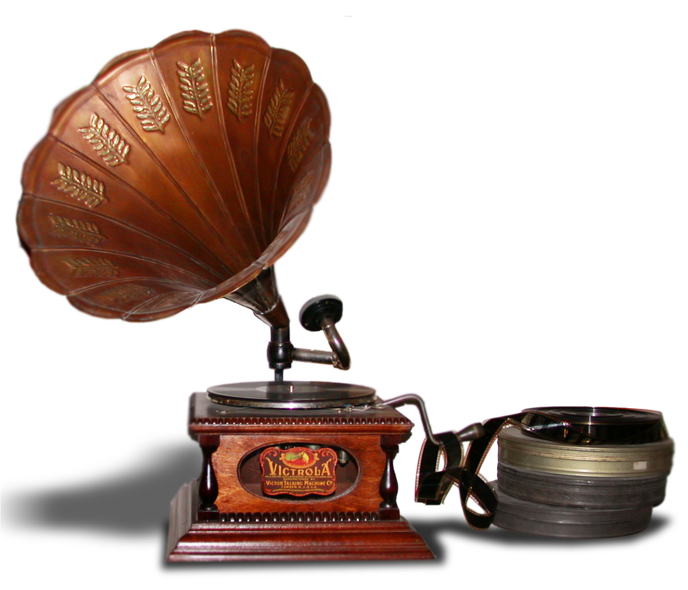
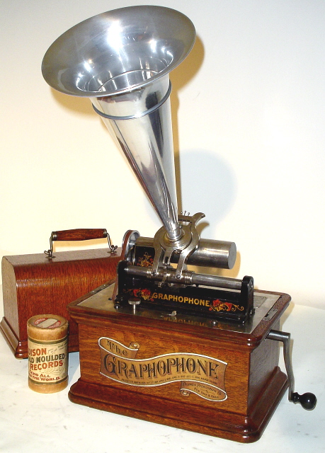

Das 19. Jahrhundert sah die Geburt
der Tonaufnahme und Wiedergabe und schuf somit die Wurzeln der
modernen Plattenindustrie. Menschen konnten endlich Musik mit nach
Hause nehmen und das Hörvergnügen, dass durch diese einfachen
Grammophone produziert wurde, herrschte bis Mitte des 20. Jahrhunderts.
Schallplatten blieben sogar noch 40 Jahre länger als wichtigster
Teil der Musikindustrie in Verwendung bis diese von der CD und
später vom MP3 Spieler abgesetzt wurden.
Natürlich liebten die Menschen Anfang des 20. Jahrhunderts genauso
wie heute die großen Tenöre. Diese Opern Stars, so wie der große
Enrico
Caruso, machten hunderte von Plattenaufnahmen, die dann auf
diesen einfachen Geräten abgespielt wurden. Auch Kinder begannen
ihre ersten Musikerfahrungen durch diese technischen Neuheiten zu
machen und die Musik der Grammophone konnte in jedem Kaffeehaus auf
der ganzen Welt gehört werden. Lieder wurden berühmt gemacht, der
Schlager entstand und die Plattenindustrie wurde langsam zum
Millionengeschäft. Eine neue Industrie war geboren "die
Plattenindustrie" und so auch ihre Stars. Aber auch wichtige
Politiker ließen sich gerne auf einer Schallplatte verewigen, so
gibt es Tonaufnahmen Kaiser Franz Josephs zum Beispiel aus dem
Jahr 1910. Tondokumente, die wir heute noch konsultieren können.
So kamen die Grammophone in die Wohnungen zuerst der reicheren
Industriellen, Adelige und Politiker und dann langsam auch in
den Haushalt der einfachen Bürger. Eine neue Zeit war angebrochen:
die Welt des Hörvergnügens.
Tonaufnahmen waren aber auch so populär, dass auch einfache Leute
sich auf Tonwalzen (mit Phonographen hauptsächlich) aufnehmen
ließen. Das hatte auch seine ganz praktischen Gründe: wenn ein
geliebter Verwandter oder Bekannter auf Reise ging, konnte
dieser seine Stimme, sprich seine gesprochenen Erlebnisse auf
einer Wachswalze aufnehmen lassen und diese Walze wurde dann
seiner Familie oder Freunden geschickt.
|  |  |
Also wenn wir über das Grammophonzeitalter sprechen, denken wir
an die Zeit zwischen 1890 bis 1955. Die ersten Geräte funktionierten
mit einfachen Federwerke, später um 1930 herum hielten die ersten
Elektromotoren Einzug.
Und ab 1955 herum wurde das Grammophon vom Plattenspieler ersetzt,
dieser wird heute noch von den Djs verwendet.
Ziel dieser Webseite ist es eine schnelle und einfache Übersicht
des Grammophonzeitalters zu erstellen um den Leser zu motivieren
mehr über das Thema zu forschen. Vielleicht auch Flohmarktbesucher
und Interessierte über das Thema zu informieren, um Fehlkäufe
zu vermeiden.